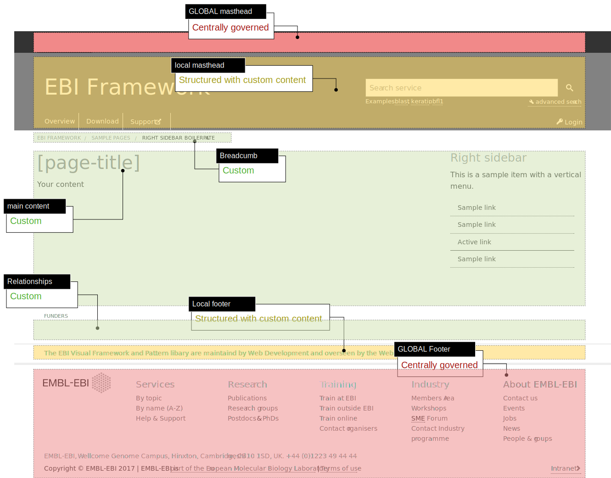

This structure is informed by a large amount of UX research, team feedback, and tweaked to be compliant with the EMBL and EMBL-EBI branding.
In short: using the boilerplate formats will help save you time, deliver a better experience to the users and keep the branding watchdogs happier.
What is the structure?
The page is divided into three major areas:
- Centrally governed structure: where content and structure are managed by EMBL-EBI (global masthead and global footer);
- Structured with custom content: where content managed by a service, and the structure is managed by EMBL-EBI (local masthead and local footer); and
- Custom: where content and structure is governed by the service with guidance from the pattern library[add link] (breadcrumb, main content, relationships).

Placement of the above three region types and associated content regions.
See also: Sample pages